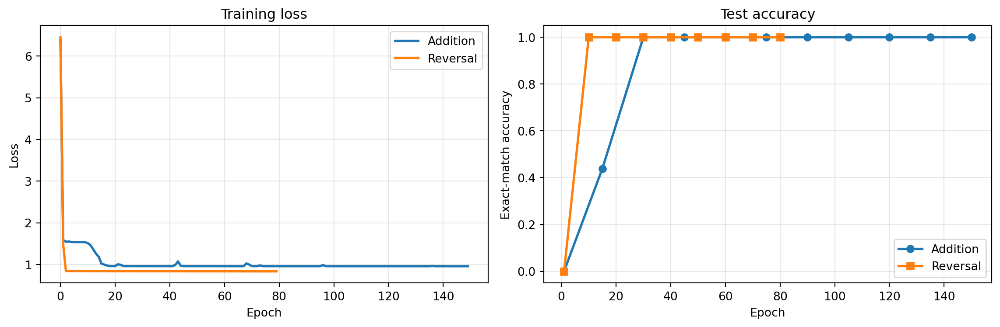
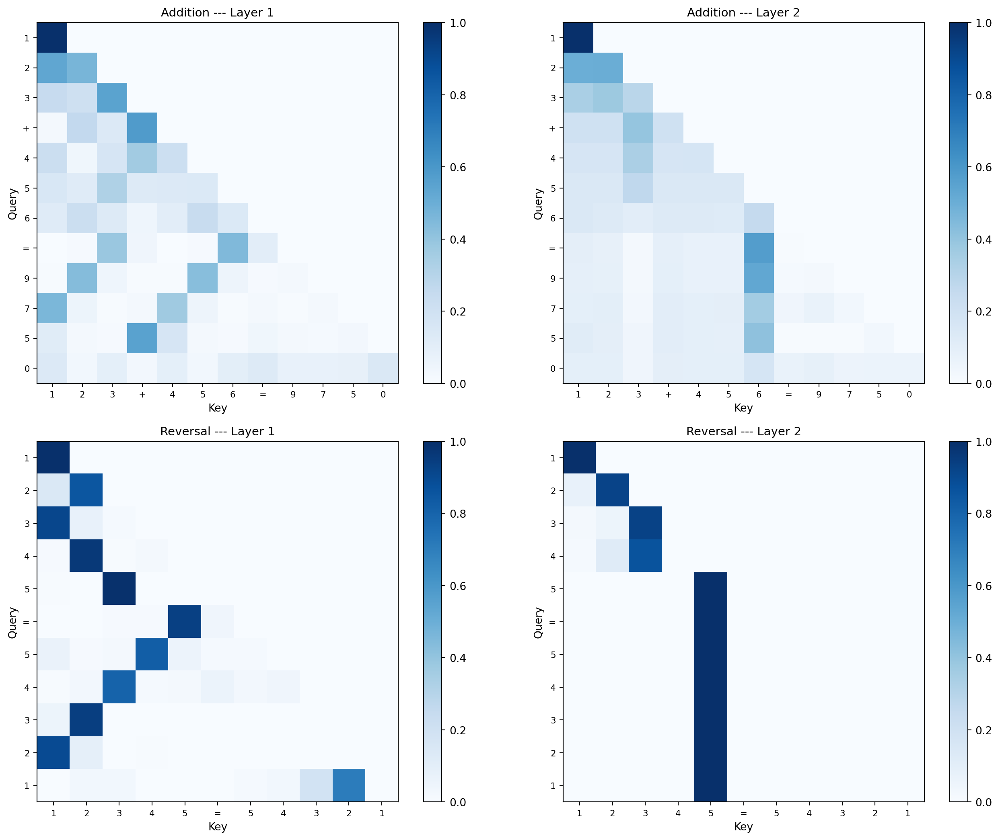

from _common import *
N_DIGITS = 3
SEQ_LEN_ADD = 2 * N_DIGITS + 2 + N_DIGITS + 26 Two Tasks, One Architecture
NoteTakeaway
The same architecture learns completely different internal programs depending on the task. Addition produces column-alignment attention; reversal produces anti-diagonal attention. The architecture is a hypothesis class — the data selects the function.
6.1 Training both models
Same vocabulary, same AdditionTransformer class, same hyperparameters. The only difference is the dataset. We train addition first (it needs the grokking phase transition), then reversal.
We use the same 150-epoch budget as Chapter 3 to ensure grokking completes, since the timing of the phase transition varies between random seeds.
# Addition model — train first with a fresh seed
torch.manual_seed(42)
add_train_X, add_train_Y = make_addition_dataset(50000, n_digits=N_DIGITS, seed=42)
add_test_X, add_test_Y = make_addition_dataset(10000, n_digits=N_DIGITS, seed=123)
add_answer_start = 2 * N_DIGITS + 1
add_model = AdditionTransformer(
vocab_size=VOCAB_SIZE, d_model=32, d_ff=64,
n_layers=2, max_seq_len=SEQ_LEN_ADD
).to(DEVICE)
print("Training addition model...")
add_history = train_model(
add_model, add_train_X, add_train_Y, add_test_X, add_test_Y,
answer_start=add_answer_start,
epochs=150, batch_size=512, lr=0.01,
warmup_steps=200, log_every=15
)Training addition model...
Epoch 1 | Loss: 6.3898 | Test accuracy: 0.1%
Epoch 15 | Loss: 1.1826 | Test accuracy: 43.9%
Epoch 30 | Loss: 0.9608 | Test accuracy: 100.0%
Epoch 45 | Loss: 0.9682 | Test accuracy: 100.0%
Epoch 60 | Loss: 0.9602 | Test accuracy: 100.0%
Epoch 75 | Loss: 0.9605 | Test accuracy: 100.0%
Epoch 90 | Loss: 0.9597 | Test accuracy: 100.0%
Epoch 105 | Loss: 0.9595 | Test accuracy: 100.0%
Epoch 120 | Loss: 0.9593 | Test accuracy: 100.0%
Epoch 135 | Loss: 0.9591 | Test accuracy: 100.0%
Epoch 150 | Loss: 0.9590 | Test accuracy: 100.0%Check whether the accuracy curve shows the characteristic grokking jump. If it plateaued near zero and then spiked, the model transitioned from memorization to generalization.
Reversal is structurally simpler than addition — each output token is a one-to-one positional lookup with no carry computation. We expect faster convergence.
# Reversal model — fresh seed
torch.manual_seed(42)
REV_SEQ_LEN = 5
rev_full_len = REV_SEQ_LEN + 1 + REV_SEQ_LEN + 1
rev_train_X, rev_train_Y = make_reversal_dataset(50000, seq_len=REV_SEQ_LEN, seed=42)
rev_test_X, rev_test_Y = make_reversal_dataset(10000, seq_len=REV_SEQ_LEN, seed=123)
rev_model = AdditionTransformer(
vocab_size=VOCAB_SIZE, d_model=32, d_ff=64,
n_layers=2, max_seq_len=rev_full_len
).to(DEVICE)
rev_answer_start = REV_SEQ_LEN
print("Training reversal model...")
rev_history = train_model(
rev_model, rev_train_X, rev_train_Y, rev_test_X, rev_test_Y,
answer_start=rev_answer_start,
epochs=80, batch_size=512, lr=0.01,
warmup_steps=200, log_every=10
)Training reversal model...
Epoch 1 | Loss: 6.4511 | Test accuracy: 0.0%
Epoch 10 | Loss: 0.8397 | Test accuracy: 100.0%
Epoch 20 | Loss: 0.8383 | Test accuracy: 100.0%
Epoch 30 | Loss: 0.8380 | Test accuracy: 100.0%
Epoch 40 | Loss: 0.8378 | Test accuracy: 100.0%
Epoch 50 | Loss: 0.8373 | Test accuracy: 100.0%
Epoch 60 | Loss: 0.8368 | Test accuracy: 100.0%
Epoch 70 | Loss: 0.8363 | Test accuracy: 100.0%
Epoch 80 | Loss: 0.8358 | Test accuracy: 100.0%If reversal converged in under 20 epochs, that confirms the complexity difference — a simple positional lookup is much easier to learn than multi-step arithmetic.
6.2 Comparing training curves
Look for two things: the number of epochs to convergence, and whether addition shows a grokking plateau (accuracy near zero while loss drops) that reversal lacks.
fig, axes = plt.subplots(1, 2, figsize=(12, 4))
axes[0].plot(add_history['loss'], linewidth=2, label='Addition')
axes[0].plot(rev_history['loss'], linewidth=2, label='Reversal')
axes[0].set_xlabel('Epoch'); axes[0].set_ylabel('Loss')
axes[0].set_title('Training loss'); axes[0].legend(); axes[0].grid(True, alpha=0.3)
add_acc = [(i, a) for i, a in zip(add_history['epoch'], add_history['accuracy']) if a is not None]
rev_acc = [(i, a) for i, a in zip(rev_history['epoch'], rev_history['accuracy']) if a is not None]
axes[1].plot([e for e,_ in add_acc], [a for _,a in add_acc], 'o-', linewidth=2, label='Addition')
axes[1].plot([e for e,_ in rev_acc], [a for _,a in rev_acc], 's-', linewidth=2, label='Reversal')
axes[1].set_xlabel('Epoch'); axes[1].set_ylabel('Exact-match accuracy')
axes[1].set_title('Test accuracy'); axes[1].set_ylim(-0.05, 1.05)
axes[1].legend(); axes[1].grid(True, alpha=0.3)
plt.tight_layout()
plt.show()
Reversal converges much faster — it’s a pure lookup task (position \(i\) maps to position \(n-i\)), no arithmetic required. Addition needs to discover column alignment and carry propagation, which takes longer and often involves a grokking phase transition.
6.3 Attention pattern comparison
TipPredict the pattern
Before looking at the reversal attention maps, think about what pattern reversal requires. If the input is 1 2 3 4 5 = ... and the output must be 5 4 3 2 1 <EOS>, then output position \(i\) needs to copy the token from input position \(n - i\). What does this look like as an attention matrix? Where should the bright spots be?
For addition, you predicted (and confirmed in Chapter 4) that output positions attend to the matching columns. For reversal, what geometric pattern replaces column alignment?
This is the payoff. Same architecture, completely different learned attention.
rev_maps, rev_labels = get_reversal_attention(rev_model, [1, 2, 3, 4, 5])
add_maps, add_labels = get_attention_maps(add_model, 123, 456, N_DIGITS)
fig, axes = plt.subplots(2, 2, figsize=(14, 11))
data = [
(add_maps[0], add_labels, 'Addition --- Layer 1'),
(add_maps[1], add_labels, 'Addition --- Layer 2'),
(rev_maps[0], rev_labels, 'Reversal --- Layer 1'),
(rev_maps[1], rev_labels, 'Reversal --- Layer 2'),
]
for ax, (attn_map, labels, title) in zip(axes.flat, data):
im = ax.imshow(attn_map, cmap='Blues', vmin=0)
ax.set_xticks(range(len(labels))); ax.set_xticklabels(labels, fontsize=8)
ax.set_yticks(range(len(labels))); ax.set_yticklabels(labels, fontsize=8)
ax.set_title(title, fontsize=11)
ax.set_xlabel('Key'); ax.set_ylabel('Query')
plt.colorbar(im, ax=ax)
plt.tight_layout()
plt.show()
Addition attention: Output positions attend to the corresponding columns of both operands (ones to ones, tens to tens). Layer 2 handles carry propagation between adjacent output positions.
Reversal attention: Output position \(i\) attends to input position \(n-i\) — a perfect anti-diagonal. No carry computation needed, just mirror-pattern lookup.
Same weight matrices, same nonlinearities, same training algorithm. The data alone determines the internal program. This is what it means for the architecture to be a hypothesis class — it defines the space of possible functions, and gradient descent selects which one.
NoteConnection: Inductive bias and model identifiability
The same architecture represents both column-alignment (addition) and anti-diagonal (reversal) attention patterns. This means the architecture has low inductive bias — it doesn’t assume a particular attention pattern a priori. Low inductive bias is powerful (handles many tasks) but expensive (needs more data to narrow down which function to learn).
Compare this to a model with high inductive bias, like a convolutional network that assumes spatial locality. A CNN would struggle with reversal (which requires long-range connections) but would need less data for tasks with local structure. Transformers succeed by having just enough bias — positions tell the model where things are, causal masking enforces temporal order — while keeping attention fully learnable.
In statistical terms, this is the bias-variance tradeoff at the architectural level. A flexible hypothesis class (low bias) fits more tasks but requires more data to avoid overfitting. The transformer’s balance point — structured enough to learn efficiently, flexible enough to represent diverse functions — is a key reason it generalizes across domains.